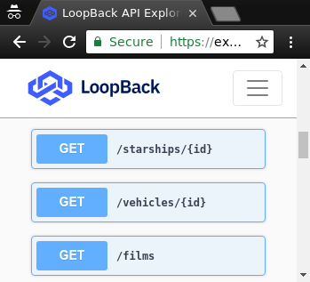

It is a period of civil war. Rebel spaceships, striking from a hidden base, have won their first victory against the evil Galactic Empire. During the battle, Rebel spies managed to steal secret plans to the Empire's ultimate weapon...
pipeprofen on github | report an issue
Run a bash shell command on the selected lines.
Execute a bash process that pipes the selected lines as
if they were an input file, same as stdin, through
a custom bash shell command. The output from the process
replaces the selection with stderr and stdout.
Works with multiple carets by piping each selection region
separately into their own process. Also works with no carets.
General usage instructions
Invoke with
ctrl-alt-shift-x,
or by selecting text and right-click the editor to show
the context menu. The menu item is called Pipe selected
text to bash.
When no lines are selected, use the keyboard shortcut to open
the bash argument window.
Demo


Note: you must have bash in your environment's PATH.
Being able to run anything in the editor and change the buffer text was heavily inspired by emacs's lisp expressions (eval-last-sexp), (eval-defun) and (eval-expression), and the Shell Process plugin.
swoopi lives here! swoopi is the freshest SWAPI and loopback API!
why
are you kidding me? it's a Star Wars API. using the
latest greatest loopback. what more could you ask for?
git clone the https://github.com/profbear/swoopi.gitcd swoopi ; npm inpm start boots a URL like localhost:3000
it'll kinda look like this publicly available
swoopi.

where data from
swoopi is a
service
proxy
to the world's first machine-readable set of Star Wars data swapi.co.
now that the SWAPI is modelled with OpenAPIv3, and because it uses loopback, you get the all the massive, cool, crazy enterprise-grade benefits.
but the rate limit
please don't be that guy;
you're limited to 10,000 API calls per day
what next
make a GUI, make an app, make some
bitch lasagna.
bugs in SWAPI
these are not swoopi bugs, but I don't know how to
get ahold of the homeboy who wrote SWAPI. so, they remain bugs:
/schema $.descriptions don't
matchup across all models
/schema $.title